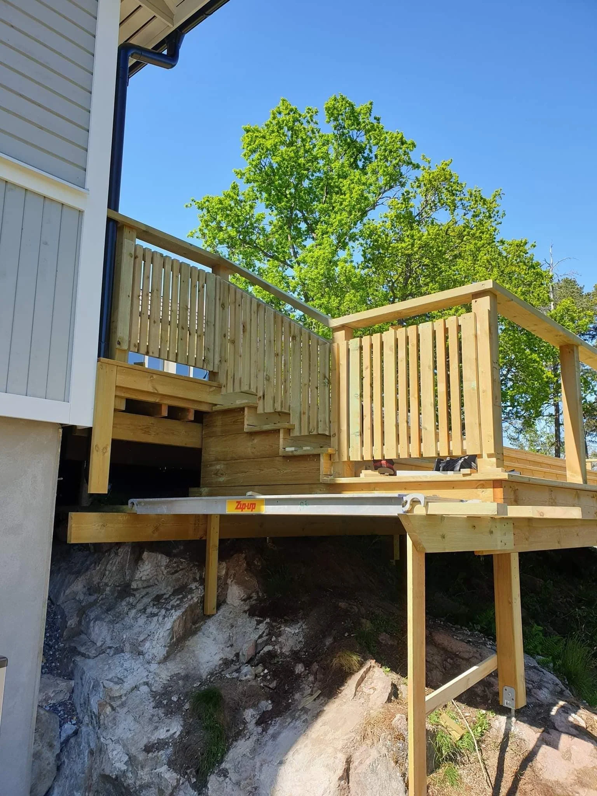
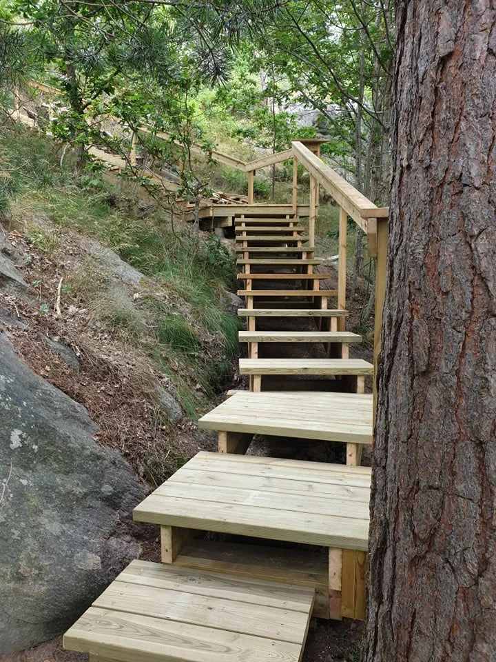

Altaner & snickeri
Detaljer som gör platsen till din.
Trädäck, trappor och snickerier som tar vara på husets och tomtens förutsättningar. Vi hjälper till med mindre arbeten och specialanpassningar, liksom delar av ett större projekt.
Prata om ditt projekt
Det ska fungera.
Och kännas genomtänkt.
En trappa som följer tomten, en uteplats med ett väl avvägt räcke eller ett snickeri som behöver måttanpassas. Våra arbeten omfattar både mindre specialanpassningar och större förändringar kring huset. Beskriv platsen och hur du vill använda den.
- Trädäck och uteplatser
- Trappor och räcken
- Anpassade snickerier
Ur våra arbeten.
Se bildgalleriet
Ett bra första samtal
börjar med din idé.
Du behöver inte ha alla svar. De här frågorna är en bra utgångspunkt.
- Var ska arbetet utföras?
- Hur ska platsen användas i vardagen?
- Har du mått, materialtankar eller inspirationsbilder?
Vad vill du
bygga vidare på?
En idé, en ritning eller en fråga. Hör av dig till Tobias och berätta om ditt projekt.